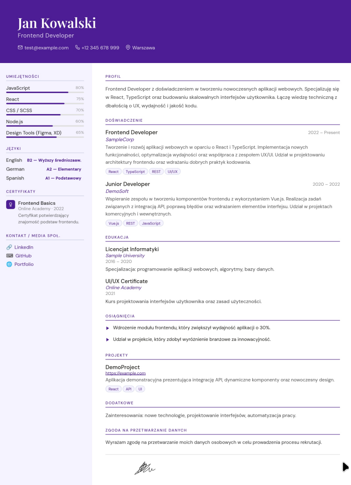
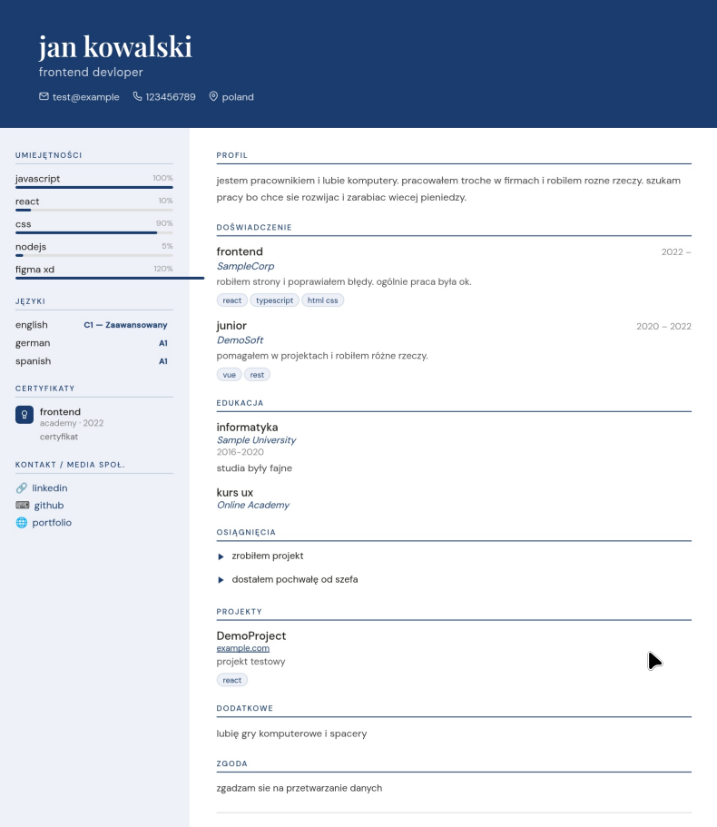

Jak poprawnie zrobić CV? Kompletny poradnik krok po kroku
Dobre CV nie musi być dziełem sztuki — musi być czytelne, konkretne i dopasowane do oferty, na którą aplikujesz. Pokazujemy dokładnie, jak je zbudować od zera, czego unikać i jak sprawić, by rekruter zatrzymał na nim wzrok dłużej niż te przeciętne kilkanaście sekund.
Statystyki rekrutacyjne są bezlitosne: większość rekruterów poświęca na pierwsze spojrzenie na CV od kilku do kilkunastu sekund. W tym czasie decydują, czy dokument trafi na stos „do dalszej analizy", czy do kosza. Dobra wiadomość jest taka, że napisanie CV, które przejdzie tę pierwszą selekcję, nie wymaga talentu graficznego ani wielogodzinnej pracy — wymaga znajomości kilku zasad, które omawiamy w tym poradniku.
Niezależnie od tego, czy piszesz swoje pierwsze CV, czy wracasz na rynek pracy po latach, poniższe kroki pomogą Ci zbudować dokument, który jest jednocześnie czytelny dla człowieka i przyjazny dla systemów ATS, czyli automatycznych filtrów rekrutacyjnych używanych przez większość dużych firm.
Dlaczego dobrze napisane CV ma znaczenie
Zanim przejdziemy do konkretów, warto zrozumieć, co właściwie sprawia, że jedno CV przechodzi dalej, a inne ląduje w koszu — mimo podobnego doświadczenia kandydatów.
- Pierwsze wrażenie decyduje o tym, czy rekruter w ogóle przeczyta resztę dokumentu
- Przejrzysta struktura ułatwia szybkie odnalezienie kluczowych informacji
- Dopasowanie treści do oferty zwiększa szansę na przejście przez system ATS
- Konkretne liczby i efekty pracy budują wiarygodność bardziej niż ogólniki
- Brak błędów językowych świadczy o staranności i profesjonalizmie kandydata
Struktura idealnego CV
Każde dobre CV opiera się na tym samym, sprawdzonym szkielecie. Kolejność sekcji może się nieznacznie różnić w zależności od branży, ale poniższe elementy powinny znaleźć się w każdym dokumencie.
Dane kontaktowe
Imię i nazwisko, numer telefonu, adres e-mail oraz ewentualnie link do LinkedIn lub portfolio. Bez adresu zamieszkania w pełnej formie — wystarczy miasto.
Podsumowanie zawodowe
Trzy–cztery zdania, które w skrócie pokazują, kim jesteś zawodowo i co możesz zaoferować pracodawcy na tym konkretnym stanowisku.
Doświadczenie zawodowe
Stanowiska w kolejności chronologicznej odwrotnej, z konkretnymi obowiązkami i mierzalnymi efektami pracy.
Wykształcenie
Nazwa uczelni lub szkoły, kierunek i rok ukończenia. Im więcej doświadczenia zawodowego, tym mniej miejsca poświęcasz na tę sekcję.
Umiejętności
Konkretne umiejętności twarde i miękkie dopasowane do wymagań z ogłoszenia, najlepiej z poziomem zaawansowania.
Sekcje dodatkowe
Certyfikaty, języki obce, projekty własne lub wolontariat — tylko jeśli wnoszą realną wartość do aplikacji.

Najczęstsze błędy w CV
Te same potknięcia powtarzają się w tysiącach dokumentów rekrutacyjnych. Sprawdź, czy żadnego z nich nie popełniasz.
Literówki i błędy językowe
Nawet jeden zauważony błąd potrafi podważyć wrażenie staranności kandydata.
Zbyt długi dokument
CV na trzy strony zniechęca rekrutera już na etapie pierwszego rzutu oka.
Same ogólniki
„Komunikatywność" i „dyspozycyjność" bez kontekstu nic nie mówią o realnych umiejętnościach.
Nieaktualne dane
Stary numer telefonu albo e-mail to najprostszy sposób na utratę szansy na rozmowę.
Stwórz CV bez żadnego z tych błędów
LatweCV prowadzi Cię krok po kroku przez każdą sekcję i automatycznie pilnuje czytelnego formatowania — wystarczy wpisać treść.
bez konta
Jak napisać podsumowanie zawodowe
Podsumowanie zawodowe to jedna z najtrudniejszych sekcji CV, mimo że ma zaledwie kilka zdań. To właśnie ją rekruter czyta jako pierwszą po danych kontaktowych, dlatego warto poświęcić jej szczególną uwagę.
Słabe podsumowanie: „Komunikatywna i zaangażowana osoba, szukająca ciekawej pracy w dynamicznej firmie."
Mocne podsumowanie: „Specjalistka ds. marketingu z 4-letnim doświadczeniem w prowadzeniu kampanii performance, która zwiększyła ruch organiczny klienta o 65% w 12 miesięcy. Szuka roli, w której rozwinie kompetencje w obszarze marketing automation."
Różnica polega na konkretach: liczbach, nazwie stanowiska i jasno określonym kierunku rozwoju. Takie podsumowanie od razu pokazuje, czy Twój profil pasuje do danego stanowiska.
Jak opisać doświadczenie zawodowe
Sekcja doświadczenia decyduje najczęściej o tym, czy zostaniesz zaproszony na rozmowę. Trzymaj się kilku prostych zasad przy opisie każdej pozycji:
- Zaczynaj każdy punkt od mocnego czasownika działania, np. „wdrożyłem", „zwiększyłem", „koordynowałam"
- Podawaj konkretne liczby i efekty zamiast samych obowiązków — „zredukowałem koszty o 18%" zamiast „odpowiadałem za budżet"
- Opisuj 3–5 punktów na stanowisko, skupiając się na osiągnięciach, a nie na codziennej rutynie
- Dopasowuj słownictwo do tego, którego użyto w ogłoszeniu — to pomaga przejść filtry ATS

Formatowanie i długość CV
Treść to połowa sukcesu — druga połowa to forma, w jakiej ją podajesz.
- Jedna strona dla większości kandydatów, maksymalnie dwie przy bogatym doświadczeniu
- Czytelny, jednolity font w rozmiarze 10–12 pkt dla treści i nieco większy dla nagłówków sekcji
- Stały, przewidywalny układ marginesów i odstępów ułatwiający skanowanie wzrokiem
- Eksport do PDF jako domyślny format wysyłki — zachowuje wygląd na każdym urządzeniu
- Prosta struktura bez grafik w tle, które utrudniają odczyt przez systemy ATS
Jeśli nie chcesz ręcznie pilnować marginesów i odstępów, generator CV LatweCV automatycznie dba o spójne formatowanie w każdym z dostępnych układów.
Checklist przed wysłaniem CV
Zanim klikniesz „wyślij", przejdź przez tę krótką listę kontrolną.
- Sprawdziłem/am pisownię i gramatykę co najmniej dwa razy
- Dane kontaktowe są aktualne i poprawnie wpisane
- Treść CV jest dopasowana do konkretnej oferty pracy
- Każdy punkt doświadczenia zawiera konkret lub liczbę
- Dokument mieści się na jednej, maksymalnie dwóch stronach
- Plik zapisany jest w formacie PDF i ma sensowną nazwę pliku
Najczęstsze pytania o pisanie CV
W zdecydowanej większości przypadków jedna strona w zupełności wystarczy. Dwie strony są akceptowalne tylko przy bardzo bogatym, wieloletnim doświadczeniu zawodowym — rekruter i tak poświęca na pierwsze przejrzenie CV zaledwie kilkanaście sekund.
Nie jest to obowiązkowe i zależy od branży oraz kraju, do którego aplikujesz. W Polsce zdjęcie wciąż bywa oczekiwane, natomiast w wielu międzynarodowych korporacjach lepiej je pominąć ze względu na politykę równego traktowania kandydatów.
PDF jest bezpieczniejszym wyborem niemal zawsze, ponieważ zachowuje formatowanie niezależnie od urządzenia odbiorcy. Wersję Word warto przygotować dodatkowo tylko wtedy, gdy ogłoszenie wyraźnie tego wymaga.
Tak. Jedno uniwersalne CV wysyłane do wszystkich firm działa wyraźnie gorzej niż wersja dopasowana do słów kluczowych i wymagań z konkretnego ogłoszenia.
Nie. Warto skupić się na doświadczeniu istotnym dla docelowego stanowiska, a krótkie lub niezwiązane epizody zawodowe pominąć albo opisać jednym zdaniem.
Najważniejsza jest prosta struktura bez tabel i grafik w tle, standardowe nazwy sekcji oraz słowa kluczowe z ogłoszenia w treści. Generator taki jak LatweCV automatycznie tworzy czytelną dla ATS strukturę pliku.
Więcej odpowiedzi na pytania o korzystanie z generatora znajdziesz na stronie najczęściej zadawanych pytań.
Gotowy/a, by napisać CV, które działa?
Zbuduj czytelne, dopasowane do ATS CV w kilkanaście minut — bez rejestracji i bez ukrytych opłat.
Stwórz swoje CV teraz →